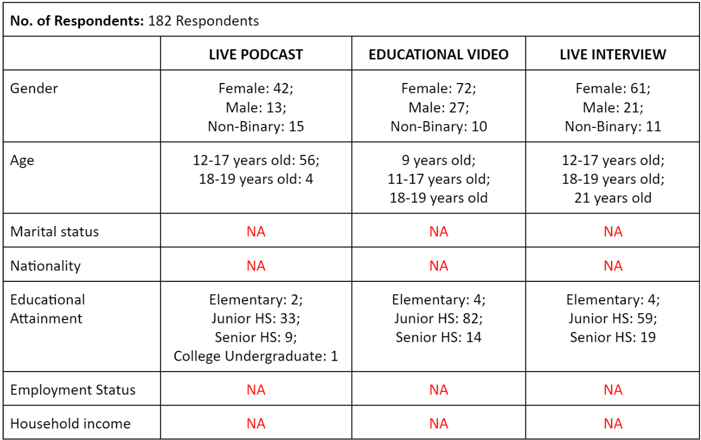

This documentary article will reveal what are the problems, needs, and analysis on the target viewers that we have identified during the English and Life Labs Integrated Performance-Assessment for the first quarter. We used different types of data gathering method such as 5 Whys, survey, and interview to collect both the qualitative and quantitative data.
We're tasked to produce streaming content. We'll research the topic we'd like to discuss and explore as our subject and identify what type of streaming content is best to use for the chosen topic.
Our chosen topic is: The unproductivity among Grade 10 Students of APEC Schools Ortigas Extension and Taytay during collaborative works. .From the word itself, this is a topic that finds the reason between student's Collaborative Learning practices – mainly the productivity during group tasks. It mainly answers the question: “How Students Are Driven in Collaborative Learning in School?” This will be a cause-and-effect as well as problem-solution topic.
Viewers Analysis for Each Streaming Category
After identifying our research topic, we have chosen three (3) content types and these are: (1) Live Podcast, (2) Pre-Recorded Live Streaming Educational Videos, and (3) Live Interview. Then, we conducted a survey to find out what type of viewers these contents have. We gathered data regarding their demographic information, beliefs, opinions, and attitudes on the topic. The results of the survey are:
Viewers' Attitudes, Beliefs & Opinions on the Topic
- 75.7% or 137 of our respondents have experienced being or feeling unproductive during collaborative works.
- 24.3% or 44 of our respondents have not experienced being or feeling unproductive during collaborative works.
- 91.7% or 166 of our respondents have experienced having group member(s) that is/are unproductive during collaborative works.
- 8.3% or 15 of our respondents have not experienced having group members(s) that is/are unproductive during collaborative works.
- 60.2% or 109 of our respondents have chosen educational videos to be the content in being informed about the practices and approach of students in their academic-related works.
The Needs of the Viewers
The root cause of the problem is that: the students are not aware of the significance or the importance of being able to be productive in collaborative learning as well as their skills that are highly needed in group works.
- The audience needs to understand and know the importance and significance of productivity in group works.
- The audience needs strategies on how to hone their skills in relation to collaborative learning for them to prevent, deal, and/or combat unproductiveness will help to address the topic’s considered issue.
- The audience needs to know the underlying disadvantages and consequences in subject to consistent practice of unproductivity in collaborative works to themselves, their peers, as well as to the educational institution.
- The audience needs to be informed about the benefits of a productive grouping; the positive impacts of this interpersonally.